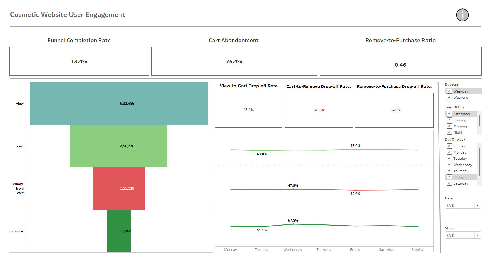

Introduction: This project focuses on analyzing the customer behavior of a cosmetic shop through a funnel-based approach.
The dataset, extracted from Kaggle, was cleaned and pre-processed using R to ensure it was ready for analysis.
Using Tableau, I developed an interactive dashboard that visualizes the entire customer journey from viewing products,
adding them to the cart, removing items from the cart, and finally making a purchase.
The objective was to understand key customer behaviors and identify any bottlenecks in the purchasing process,
which can ultimately help in optimizing the user experience and improving conversion rates.

Key Features:
• Customer Segmentation:
Segments users based on their actions—viewing, adding to cart, removing from cart, and purchasing. This allows for better understanding of customer behaviors and identifying trends across different user groups.
• Funnel Analysis & Completion Rates:
Visualizes the customer journey through four key stages:
► View → Add to Cart → Remove from Cart → Purchase
Displays completion rates at each stage to highlight conversion efficiency and identify bottlenecks.
• Cart Abandonment & Remove-to-Purchase Ratio:
► Cart Abandonment Rate: 75.4% – A high rate of users abandoning their carts indicates potential friction points in the purchasing process.
► Remove-to-Purchase Ratio: 0.46 – For every user who removes an item from the cart, only 46% proceed to purchase, pointing to potential issues with product appeal or pricing.
• Funnel Drop-Off & Stage Performance:
Visualizes funnel drop-off at each stage, highlighting areas where customers are most likely to abandon the shopping process. This allows for targeted improvements to reduce friction and increase conversions.
• Interactive Filters for In-Depth Analysis:
Includes customizable filters for deeper insights:
► Time of Day, Weekday/Weekend, Day of the Week
These filters enable detailed analysis of user behavior during specific times, revealing patterns in cart abandonment and purchase completion.
• Data-Driven Insights for Optimization:
Provides actionable insights on how to reduce cart abandonment and increase purchases, such as optimizing checkout flow and addressing friction at key stages of the funnel.